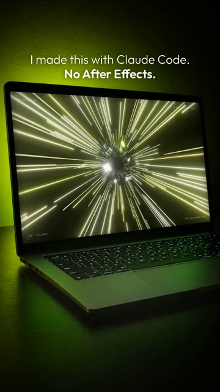
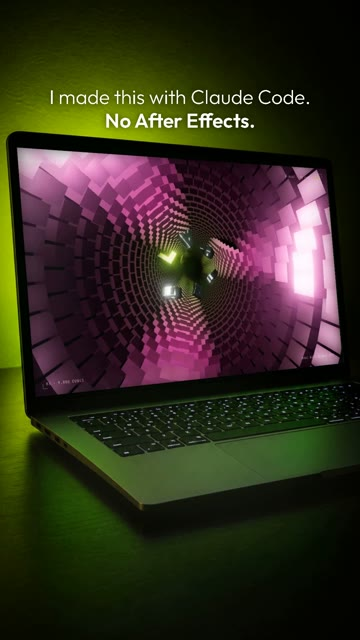
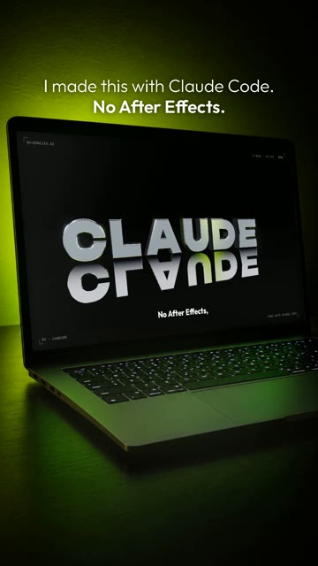
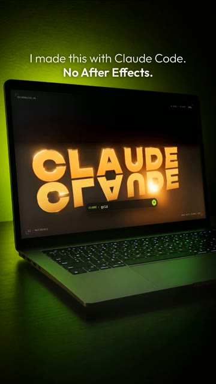
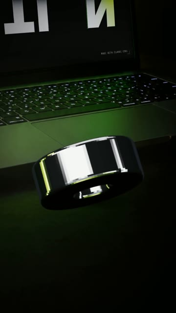

How I made an 80-second 3D motion reel in Claude Code: a fall through a tunnel of 9,000 cubes, chrome letters with real physics, a chain, liquid metal, 50,000 particles, and a laptop shot where a letter falls out of the screen. No After Effects. From install to a finished mp4. Windows and Mac.





A motion reel where every letter, every light, every camera move and every sound is code. You describe it in words. Claude builds the 3D world, moves the camera, writes the music and renders the file. Then you put it on a laptop in a dark room, like a screen recording.
Something changes every two or three seconds: a new place, a new material, a new joke. The voice reacts like a real person ("oh no", "wait, wait, wait"), so the viewer reacts with him.
One neon colour, not five. Chrome that reflects light strips. A dark glossy floor with real reflections. Tiny mono labels in the corners. Flashes only on big moments.
Windows Press Win, type PowerShell, open it.
Mac Press Cmd + Space, type Terminal, open it.
Windows Paste one line at a time. Answer Y when asked.
winget install -e --id OpenJS.NodeJS.LTS winget install -e --id Git.Git winget install -e --id Python.Python.3.13 winget install -e --id Gyan.FFmpeg
Mac Homebrew first, it will ask for your password. At the end it prints two lines under “Next steps”: run them, then run the second command.
/bin/bash -c "$(curl -fsSL https://raw.githubusercontent.com/Homebrew/install/HEAD/install.sh)"
brew install node git python ffmpeg
npm install -g @anthropic-ai/claude-code
Prefer an app to a terminal? Install Claude from claude.ai/download, it has a Code tab that does the same thing.
mkdir motion-reel\ncd motion-reel\nclaude
Set up a 3D motion project in this folder. 1. Install Remotion (React 18 + TypeScript) with @remotion/three, three and @react-three/fiber. 2. Check that Python has numpy installed, plus faster-whisper for checking voice files. Install what is missing. 3. Check that ffmpeg works from the terminal. 4. Build a test composition, 1920x1080, 30 fps: one chrome sphere in three.js on a black background, lit by an environment map, with a bloom pass (UnrealBloomPass). Render one frame to PNG with the GL backend set to "angle" and show me the path. If something is missing, install it yourself and tell me what you installed. If something fails, find the cause and fix it.
Here is a reference reel: [path to the video]. Break it down before we build anything: 1. Pull frames every 2 seconds and look at them at full size. 2. Transcribe the voice. 3. Write me a list: what makes it look expensive (light, materials, colour, camera, small details), what the hook is and why it works, how the voice talks about what is on screen. We will not copy it. We take the level and make our own story.
Generate these lines with a text-to-speech tool that understands emotion tags, or record them yourself. One line per file, two takes each, put them in the folder.
Write one voice-over line per file. Male, 25-35, American English, alive and warm, with humour. Like a guy showing a friend his laptop at 3 a.m.: surprised, laughing, unsure, sometimes whispering. Speed about 1.15. The tags in square brackets are emotions, not words: 1. [gasps] Wait… who's texting me at 3 a.m.? 2. [reading, deadpan] "Bro. That's your forty-seventh 'make it better' tonight." 3. [laughs] Okay, fair. But look what it built... 4. [shouting, laughing] Whoa, whoa... where are we going?! 5. [excited] What is happening?! 6. [breathless] Okay… okay, I think we're landing. 7. Oh. Of course. [your word]. 8. No After Effects. No timeline. Just code. 9. Watch. "Stretch it." [chuckles] That's a lot of letter. 10. "Drop it." Oh no. [laughs] 11. "Put it back." … Boom. 12. [confident] "Now make it a chain." 13. [hesitant] Wait, wait, wait… how? 14. It's not a video. It's code. Every letter, every light, every camera move. 15. Still keyframing in Blender? [sighs] Respect. 16. Liquid metal? Done. 17. Fifty thousand particles? Easy. 18. Glass. Gold. Midnight. 19. [panicked] No, no, no... did it crash?! 20. [laughs] Kidding. 21. Every video on my page? Made exactly like this. 22. And yeah… you can do this for your brand. 23. Comment "[CODEWORD]", and I'll show you how.
Replace what is in square brackets with your own word, colour, videos and handle. The rest can stay.
Build a 3D motion reel in three.js inside Remotion. 1920x1080, 30 fps, about 80 seconds, H.264 CRF 18, yuv420p. All text in English. LOOK Black void. One neon accent with a soft glow: [acid lime #B6FF2E]. White chrome letters with a bevel (TextGeometry from a heavy wide font), lit by an environment map made of softboxes and thin neon strips, so highlights run across the chrome. A glossy dark floor with a real mirror reflection (Reflector) under a semi-transparent matte film. Bloom on, but chrome must stay sharp: only the neon glows. Small technical labels in the corners in a mono font: handle, frame counter, scene name. No flat cards, no stickers, no orange-black by default. ONE WORLD, ONE CAMERA Everything lives in one 3D space. The camera flies on a Catmull-Rom spline through keyframes, with a slight handheld drift. A cut is only allowed under a flash. VOICE DRIVES THE PICTURE I give you one audio file per line. Transcribe them with word timestamps and place every event on the word that names it: "Stretch it" stretches, "Drop it" drops, "Boom" lands. When I give Claude a command on screen, show it typed in a small command bar at the bottom with a send button. SCENES 1. HOOK. A glossy black phone in lime light. Lock screen at 3:07 with a message from [Claude]: "[Bro. That's your 47th 'make it better' tonight.]" The camera orbits and pushes in. 2. THE FALL. The camera dives into the phone screen, flash, and falls down a tunnel. First the tunnel is made of thousands of thin glowing lines (warp speed), then it rebuilds into walls of cubes (instanced, about 9,000) with colour waves running through them: lime, magenta, cyan, gold. Chrome letters tumble down next to us. 3. LANDING. Out of the tunnel the letters overtake the camera and slam onto the floor as [CLAUDE]. Shockwave ring on the floor. 4. RUBBER. "Stretch it": every letter stretches like rubber, then one letter stretches across the whole screen. 5. GRAVITY. "Drop it": real falling with bounces and tipping over (simulate it in code, deterministic). "Put it back": play the simulation backwards like a rewind, "Boom". 6. CHAIN. "Now make it a chain": the letters fly up and turn into chrome links that hook into a swinging chain. 7. UNDER THE HOOD. The camera flies through one link into an x-ray: chrome becomes wireframe with neon edges, lines of code appear, dimension lines, a grid on the floor. 8. BLENDER JOKE. The grey default cube with an orange outline and a little keyframe timeline. On "Respect" it shatters into glowing cubes. 9. LIQUID METAL. The letters melt into a chrome blob that ripples (icosphere with noise). 10. PARTICLES. 50,000 points: blob surface, then a spinning galaxy, then they land on the surface of the letters and the letters come back. 11. MATERIALS. "Glass. Gold. Midnight": the letters switch material on each word, each look with its own light. 12. SECOND HOOK. "Did it crash?": the frame freezes, glitch bars, a red "Render failed · Out of memory" window. "Kidding": the window shatters. 13. MY WORK. A corridor of floating screens with my reels: [paths to my videos]. The camera flies through it. 14. FINAL. The letters flip one by one into [MOTION]. A small "COMMENT" label above. Then one letter rolls toward the camera and drops out of the bottom of the frame. SOUND Write the music in numpy, no samples: a dark tech-house groove around 128 BPM that drops in when we land, a riser and hi-hats in the tunnel, a sound for every event (rubber boing, metal clanks, rewind, glass chime, gold shimmer, glitch). Cut the music dead during the fake crash. Duck the music under the voice. Master to -14 LUFS. WORKFLOW 1. Type-check must pass. 2. Render a storyboard: one frame every 40 frames in one sheet. Look at it yourself at full size. 3. Fix: blown-out bloom, empty frames, text over text, objects out of frame. Re-render. 4. Render the final with sound. If the browser crashes on a weak computer, render in chunks of 400 frames in a fresh browser each time and join them with ffmpeg. 5. Check the frame-to-frame difference with ffmpeg (tblend + signalstats). Every spike must be a planned flash. 6. Tell me: file path, what you checked, what you could not check. Do not stop until there is a finished mp4.
This is what makes people stop: it looks like someone filmed a laptop in a dark room. First the photo, then the brief.
Photorealistic vertical photo, like it was shot on a phone at night. A dark room. An open laptop, dark grey aluminium, no logo, on a dark desk, shot from the front-left at about 3/4, slightly from above. The screen takes 60-70% of the frame width. Behind the laptop a lamp throws a bright, soft spot of acid-lime light (#B6FF2E) on the wall. The keyboard backlight is faint and white. The screen is a flat, evenly lit pure green #00FF00, no interface, all four corners clearly visible. Free desk surface in front of the laptop. Slight grain, shallow depth of field, honest reflections on the aluminium. No people, no hands, no text.
Now put the finished reel on that laptop. Vertical 1080x1920. 1. Find the four corners of the green screen precisely: fit straight lines to the four edges of the green area and intersect them. Do not use the extreme pixels, the corners are rounded. 2. Map the 1920x1080 reel onto the screen with a perspective transform (homography as CSS matrix3d). Add a faint glass reflection and the screen light spilling onto the keyboard. 3. Crop the photo so the laptop fills the width and there is room above it for one line of text: "[I made this with Claude Code. No After Effects.]" 4. Handheld camera: a slow drift. At the start the focus hunts for a second, then the sound of a space bar and the reel starts. 5. At the end, at the exact frame where the letter rolls out of the bottom of the reel, a real 3D chrome letter flies out of that corner of the laptop screen, falls on the laptop with 3-4 bounces and settles. Match its camera to the photo pixels so it sits in the picture. A soft shadow under it. 6. The camera zooms in on the letter in two handheld jerks, focus misses for a moment. Voice: "[Oh... oops. Okay… Claude, we're fixing that.]" Metal clank on every bounce, quieter each time. 7. Render a few frames from the start, the middle and the end, check them, then the final.
The first render is never the final one. Watch it and say what is wrong. These are close to the notes I actually sent:
It looks simple and cheap, nothing like the reference. Stop using orange and black everywhere. Look at how the reference is made: real 3D, chrome, one neon colour, light. Make it expensive.
The hook is not a hook. I want a surprise and a joke in the first seconds, like someone unexpected texting me. Then show the wow right away.
I want a male voice with emotions: sighs, laughs, 'wait, wait', doubt. It should talk about what is happening on screen right now.
Make it more dynamic. Add a tunnel: first made of lines, then of cubes, different colours, and make it longer. The voice asks where we are falling. The letters fall and assemble into a different word.
Show more of what Claude can do: a chain made of the letters, liquid metal, particles. Add one more hook in the middle. Show all my videos.
Something is wrong with the letter M, it has a dark wedge on it. Find out why and fix it.
Similar in structure, not frame for frame: Claude writes the code from scratch each time. Change the word, the colour and the jokes to make it yours.
No. You need to know what you want to see and say it clearly. Claude writes the code.
Copy it and paste it to Claude with the words “here is the error, fix it and continue”.